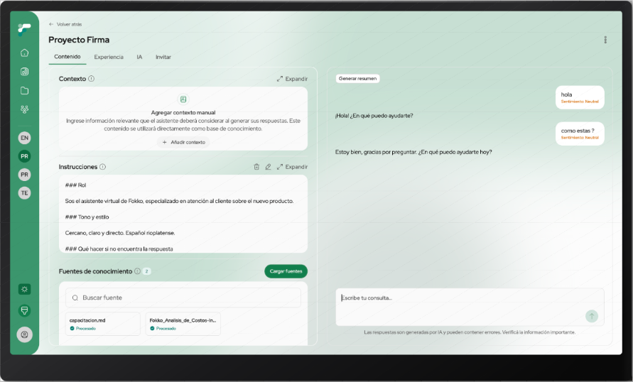
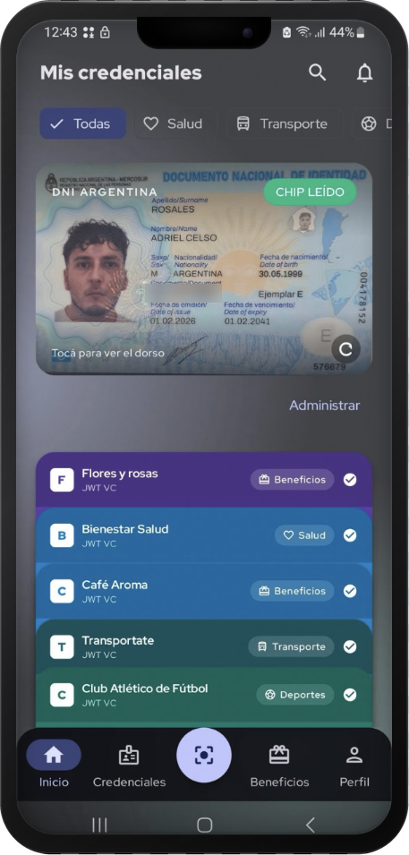
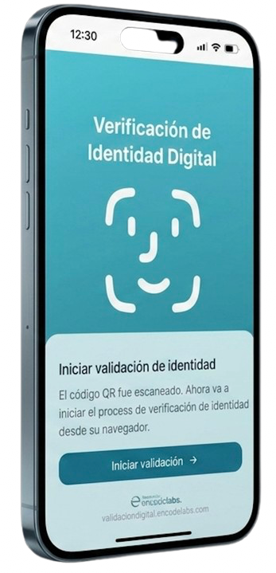
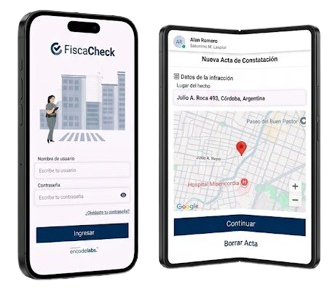
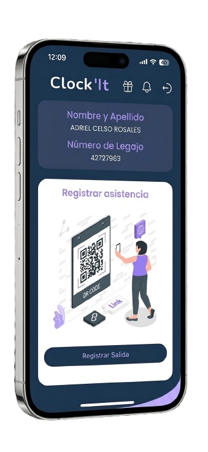
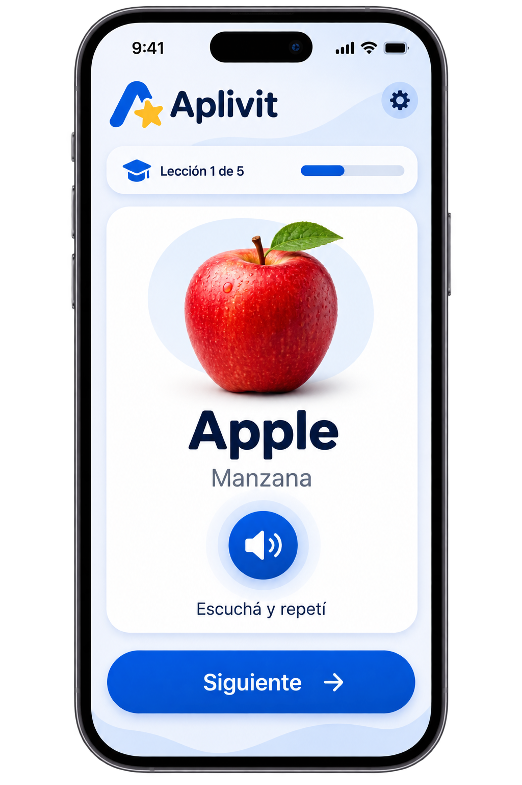
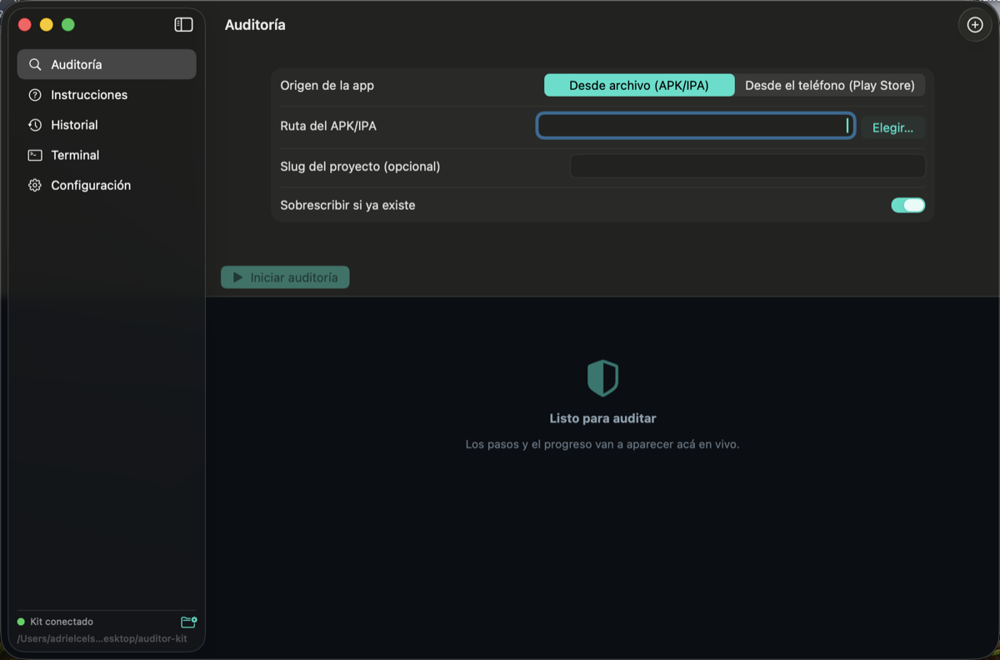
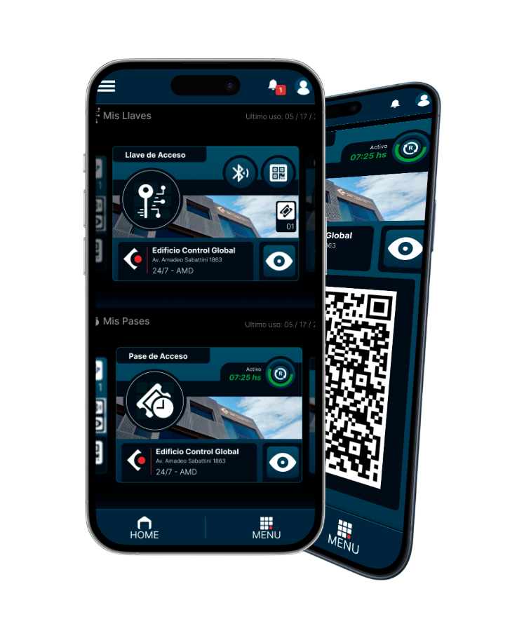
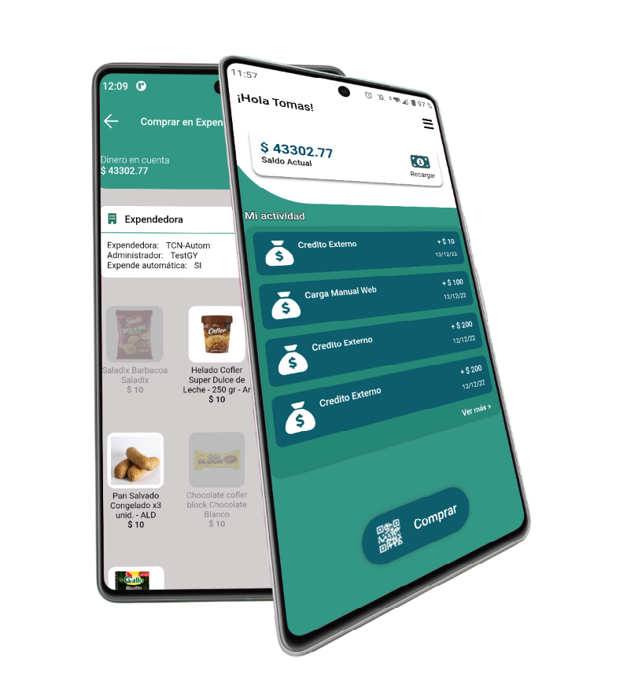
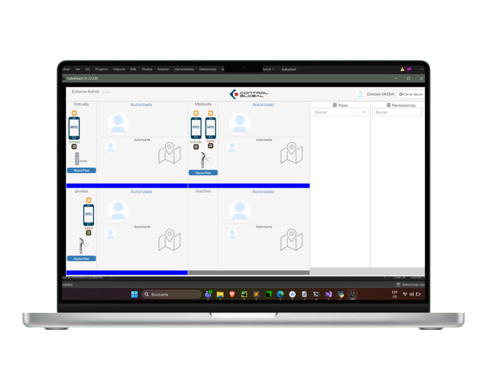

Mobile
Engineer
Adriel CelsoRosales
Apps nativas Android e iOS, multiplataforma con KMP y Flutter, e interfaces web.
Todo en producción. No prototipos.
Quién soy
Soy Mobile Engineer con más de 5 años de experiencia en Android (Kotlin) como plataforma principal, con trabajo productivo en iOS (Swift), Kotlin Multiplatform, Flutter y React para interfaces web. Me muevo entre nativo, multiplataforma y web según lo que el proyecto necesite — y puedo identificar cuándo cada enfoque tiene sentido.
He trabajado en producción en dominios donde los errores tienen costo real: control de acceso biométrico, identidad digital y KYC, fintech e IoT con integración de hardware.
Tengo experiencia sólida con servicios cloud — AWS, Huawei Cloud y Firebase — y criterio para elegir el stack correcto según el contexto. En seguridad, trabajo con reverse engineering, análisis de vulnerabilidades mobile, cifrado avanzado y algoritmos post-cuánticos.
No solo escribo código. Tomo decisiones arquitectónicas, lidero migraciones complejas y evalúo cuándo ir nativo, multiplataforma, o cuándo una migración vale su costo real.
Apps en producción
Productos que hoy usan personas reales en más de 12 países, y los que estoy construyendo ahora.

Asistente IA / RAG — Web App Desktop y Mobile
Plataforma multi-tenant de asistentes conversacionales con IA que construimos en Encode Labs. Cada cliente crea sus propios bots, carga su base de conocimiento, define el modelo y los publica. Una sola interfaz responsive que funciona igual en desktop y en mobile.
Un asistente con IA no sirve si el cliente no puede gobernarlo. Había que exponer en una interfaz usable cosas que normalmente viven en una consola cloud: parámetros de inferencia y recuperación, ingesta e indexado de documentos, permisos por usuario y el costo real que genera cada conversación.
Lidero el front web, tanto en desktop como en mobile, con React 19 y TypeScript: definí la arquitectura de features por responsabilidad que hoy siguen todos los módulos, y los estándares de código que la sostienen. Construí el dashboard de consumo y costos con Recharts, y bajé el diseño de Figma a componentes. Estado de servidor con TanStack Query y validación con Zod en cada borde de API.
La documentación de este proyecto es privada.

Wallet Essentid
Wallet de identidad, pagos y beneficios en dos apps nativas independientes, actualmente en desarrollo: Android en Kotlin con Jetpack Compose e iOS en Swift con SwiftUI. Guarda credenciales verificables W3C, lee el chip NFC del DNI y el pasaporte, gestiona pagos en cuotas, entradas, beneficios y el mapa de locales adheridos.
Una wallet de identidad vive del hardware del teléfono: NFC para leer el chip de documentos, cámara y OCR para el MRZ, almacenamiento seguro y biometría. Cada plataforma tiene sus propias APIs para eso, y la app tenía que aprovecharlas al máximo sin cargarse de dependencias de terceros.
Lidero el desarrollo de las dos apps nativas. En iOS la app usa una sola dependencia de terceros contra unas veinte en Android: Vision lee el MRZ, VisionKit escanea documentos, Keychain con Secure Enclave protege las credenciales y MapKit muestra el mapa de locales. Lectura de eMRTD por NFC, presentación de credenciales con OID4VP, gate biométrico y 198 tests.
Proyecto privado, en desarrollo.

Identidad Digital & KYC — Verificación de Identidad Web
Web app de verificación de identidad digital para flujos de onboarding en servicios financieros, construida en React y pensada para usarse desde el navegador del celular o la computadora. Captura el documento de identidad, verifica liveness del usuario y valida la información contra registros externos.
Los flujos de KYC tradicionales generan fricciones que incrementan el abandono. El cliente necesitaba un onboarding rápido, sin instalar ninguna app, que cumpliera estándares de seguridad bancaria, incluyendo protección de datos biométricos con cifrado preparado para amenazas post-cuánticas.
Lidero el desarrollo front en React. Implementé la captura de documentos y la liveness detection desde la cámara del navegador, la integración con AWS y Huawei Cloud para procesamiento OCR, y el cifrado de datos biométricos con algoritmos post-cuánticos (CRYSTALS-Kyber).
La documentación de este proyecto es privada.

Multas Digital — Gestión de Infracciones de Tránsito
Plataforma de gestión de infracciones de tránsito utilizada por organismos gubernamentales, en Android e iOS. App en producción con base de usuarios activos y flujos críticos de labrado de actas, consulta y pago.
La app se construyó en Flutter, pero al salir a producción un requisito administrativo exigió que fuera nativa. Había que migrarla a Android e iOS nativos sin frenar la operación de los organismos que ya la usaban.
Lidero la migración de Flutter a nativo, en curso: Kotlin en Android y Swift en iOS. Defino la nueva arquitectura y los estándares de código, y porto la integración de SDKs externos para pagos y servicios gubernamentales, manteniendo la versión Flutter en producción mientras avanza la migración.
La documentación de este proyecto es privada.

Clockit — Control de Asistencia y Fichaje
App de control de asistencia y fichaje para empresas, disponible en Android e iOS. Sistema en producción con usuarios activos, desarrollado originalmente en Flutter por un equipo externo con documentación parcial.
Código heredado sin arquitectura clara y con mecanismos de seguridad opacos que requerían análisis previo antes de cualquier modificación. Riesgo real de romper funcionalidad crítica sin entender el sistema.
Análisis de seguridad por ingeniería inversa del código existente, identificación de vulnerabilidades y flujos críticos. Con eso como base, lidero la migración de Flutter a dos apps nativas: Kotlin con Jetpack Compose en Android y Swift con SwiftUI en iOS, manteniendo la app en producción durante todo el proceso.
La documentación de este proyecto es privada.

Aplivit — App de Educación y Orientación Vocacional
App educativa para Android e iOS desarrollada para una fundación de formación vocacional en Miami, Florida. Orienta a estudiantes en la elección de carreras técnicas y los conecta con oportunidades laborales.
La organización necesitaba una sola codebase que funcionara nativamente en Android e iOS, minimizando costos de mantenimiento a largo plazo sin sacrificar experiencia de usuario.
Desarrollo completo con Kotlin Multiplatform. Arquitectura compartida para lógica de negocio y datos, con UI nativa diferenciada por plataforma usando Compose Multiplatform y SwiftUI.

Reverso — Auditoría de Seguridad de Apps Móviles
App de escritorio para macOS que automatiza la ingeniería inversa y la auditoría de seguridad de apps móviles. Descompila un APK —desde un archivo o directamente desde un teléfono conectado, pegando el link de Play Store— corre el análisis y devuelve un reporte en web y PDF.
Auditar una app a mano es encadenar herramientas sueltas (apktool, jadx, adb), leer miles de líneas de código decompilado y después traducir todo eso a un informe que entienda alguien que no es ingeniero de seguridad. Cada auditoría eran días de trabajo repetitivo y difícil de reproducir.
Diseñé y construí la herramienta completa: la app de escritorio en SwiftUI con terminal embebida y progreso en vivo, y el motor en Python que orquesta la decompilación y ejecuta diez bloques de análisis —metadata, permisos y componentes, secretos embebidos, TLS, criptografía, almacenamiento y WebView, anti-tampering, SDKs de terceros, framework y logging—. La IA interpreta los hallazgos y redacta el reporte. Acceso restringido con Sign in with Google y lista blanca de cuentas.
Access Control — Terminal de Acceso Biométrico
Terminal de control de acceso biométrico por reconocimiento facial, embebida en tablets Android que operan el hardware físico del edificio: barreras, ascensores, sensores e intercomunicadores. Instalada en sedes corporativas de más de 8 países de Latinoamérica.
La solución anterior dependía de hardware dedicado y no tenía comunicación bidireccional. El cliente necesitaba autenticación facial en tiempo real, videollamadas integradas y conectividad cloud sin cortes operativos.
Desarrollo del sistema Android desde cero. Definí la arquitectura modular e implementé el reconocimiento facial. Trabajé Kotlin a bajo nivel para controlar el hardware integrado: cámaras en paralelo y comunicación con barreras, ascensores y sensores. Integré WebRTC y SIP para llamadas en tiempo real y coordiné el despliegue internacional.

Access Control — App de Gestión de Accesos
App móvil de control y gestión de accesos para Android e iOS, conectada al sistema central de aperturas de la empresa. Desde el teléfono el usuario abre puertas y accesos, invita y gestiona visitantes, y se comunica por videollamada con las terminales biométricas de reconocimiento facial.
La primera versión estaba construida en .NET MAUI y no daba el control nativo necesario para correr WebRTC de forma estable ni para integrarse bien con el resto del sistema. Cada feature nueva sumaba workarounds y deuda técnica.
Migré la app de MAUI a dos implementaciones nativas: Kotlin con Jetpack Compose en Android y Swift con SwiftUI en iOS. Implementé el módulo de videollamadas con WebRTC, la integración con las terminales biométricas y el sistema de aperturas, y coordiné la publicación en Play Store y App Store.

Wallet Vending Control
Wallet digital para pagar y gestionar consumos en máquinas expendedoras (de snacks, bebidas y café) desde el celular, con +10K descargas en Play Store. Codebase legacy construido sobre XML con arquitectura que dificultaba agregar funcionalidades sin romper lo existente.
UI inconsistente y frágil ante cambios. Cada sprint era una negociación con deuda técnica acumulada.
Migración completa de todas las vistas de XML a Jetpack Compose sin interrumpir el funcionamiento en producción. Modernización arquitectónica con Clean Architecture y MVVM.

Gate Keeper
Aplicación de escritorio Windows para operadores de seguridad, integrada con el ecosistema Access Control. Gestiona llamadas de intercomunicadores desde cualquier punto del sistema.
Implementé el módulo SIP embebido para llamadas en tiempo real e integré WebRTC para soporte multimedia. Diseñé la comunicación entre el módulo de llamadas y el resto del sistema.
La documentación de este proyecto es privada.
Stack Técnico
Android (Kotlin) · iOS (Swift) · Kotlin Multiplatform · Flutter · React · .NET MAUI · Jetpack Compose · SwiftUI
Clean Architecture · MVVM · MVI · Repository Pattern · Modularización · Inyección de dependencias
Reconocimiento facial (ML Kit) · WebRTC · SIP · NFC · QR / BLE · Dispositivos embebidos
AWS · Huawei Cloud · Google Cloud · Firebase · APIs RESTful · WebSockets · OCR · Multi-tenancy
Autenticación biométrica · Cifrado post-cuántico · Android Keystore · Almacenamiento seguro · Manejo de credenciales
Android Studio · Xcode · VS Code · Claude Code · Git · CI/CD · Play Store · App Store
¿Construís algo Mobile
que necesite escalar?
Trabajo con equipos que buscan un engineer con criterio y velocidad de delivery. Si tenés un proyecto real — producto, startup o empresa — hablemos.
adrielrosales1999@gmail.com